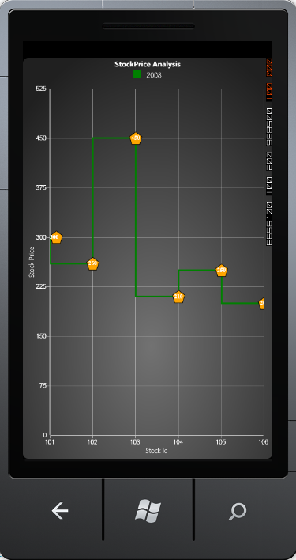

Essential Chart WindowsPhone supports a set of built-in Adornment Symbols, which can be set by using the SymbolTemplate property of Chart AdornmentInfo class. You can also apply your own custom adornment symbols. The following are the set of pre-defined adornment symbols.
· Custom
· Ellipse
· Cross
· Diamond
· Hexagon
· HorizontalLine
· InvertedTriangle
· Pentagon
· Plus
· Square
· Triangle
· VerticalLine
The following code example illustrates how to use a pre-defined adornment template.
|
[XAML]
<syncfusion:ChartSeries Type="StepLine" Interior="Green" Label="2008" StrokeThickness="3" DataSource="{StaticResource data1}" BindingPathX="StockId" BindingPathsY="MaxStockPrice"> <syncfusion:ChartSeries.AdornmentsInfo> <syncfusion:ChartAdornmentInfo Visible="True" Symbol="Pentagon" SymbolInterior="Orange" SymbolHeight="25" SymbolWidth="25" LabelContentPath="DataPoint.Y" VerticalAlignment="Center" SegmentLabelFontSize="11" SegmentLabelFontWeight="Bold"/> </syncfusion:ChartSeries.AdornmentsInfo> </syncfusion:ChartSeries>
|
|
[C#]
// Initializing the Adornment. ChartAdornmentInfo adornment = new ChartAdornmentInfo(); adornment.Visible = true;
// Initializing the Pre-defined symbol. adornment.Symbol = Symbol.Pentagon; adornment.SymbolInterior = new SolidColorBrush(Colors.Orange); adornment.SymbolWidth = 25; adornment.SymbolHeight = 25;
// Adding adornment in the Chart Series. ChartSeries series = new ChartSeries(); series.AdornmentsInfo = adornment; chart.Areas[0].Series.Add(series); |

Figure 68 : Adornment Symbol